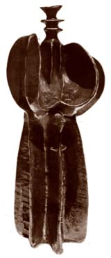

| Tarik
Ibrahim, Waleed Qaisi, Sa'ad Shakir
Three Iraqi ceramists.
Tariq
Ibrahim (b. 1938). Ibrahim graduated from the Institute
of Fine Arts in Baghdad in 1959. He furthered his studies
at the Central Institutes of Applied Arts in Beijing, China
in 1964 and Moscow, USSR in 1966 and worked in a ceramics
factory in Cuba from 1966–69. He taught ceramics at
Baghdad University, College of the Arts from 1970–97.
Ibrahim makes hand-built sculpture and sculptural vessels
with architectural and landscape elements. He has retired
from teaching and lives in Baghdad.

|
Waleed
Rasheed Qaisi (b. 1963). Qaisi graduated from the Institute
of Fine Art in Baghdad in 1985. He was artist-in-residence
at the Shigaraki Ceramic Culture Park in Japan in 2004 and
that year also exhibited in London. He is known for his hand-built
abstract and narrative earthenware sculpture. Qaisi is a resident
of Qatar.

|
Sa’ad
Shakir (b. 1935). Shakir graduated from the Institute
of Fine Arts, Baghdad in 1959, then taught there for one year
in 1960. In 1961 he received a scholarship to study ceramics
at the Central School of Fine Arts in London, Britain, from
where he graduated in 1963. He taught there and at the Harrow
School of Art from 1963–65. After returning to Iraq,
he taught at the at the Institute of Fine Arts, Baghdad, from
1966–2001. He was elected a member of the Iraqi Fine
Artists Association in 1959, the International Academy of
Ceramics in 1963, the British Ceramic Association in 1964
and the National Committee for Fine Arts in 1993. He has won
several awards, including the Silver Jubilee prize from the
Iraqi Artists Association in 1987 and awards from the Ministry
of Culture in 1995 and 1997. Shakir makes semi-abstract and
abstract sculpture, as well as decorative platters. He has
also retired from teaching and lives in Baghdad. His son Delar
is also a ceramist.
 |
More Artists of the Week
More Articles
|